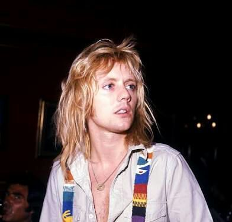

Originalmente, a banda Queen surgiu a partir da Smile, banda formada por Brian May, Roger Taylor e o baixista Tim Staffell. Com o fim desse conjunto, Freddie Mercury e John Deacon, juntamente com May e Roger, estabeleceram a formação de um novo grupo em meados de 1970. Os seus dois primeiros álbuns alcançaram pouco sucesso, até que tornaram-se internacionalmente conhecidos por meio dos álbuns Sheer Heart Attack e principalmente por A Night at the Opera, cujos singles "Bohemian Rhapsody" e "You're My Best
Friend" alcançaram bons desempenhos. Mais tarde, a popularidade do quarteto estendeu-se com News of the World, em 1977, devido aos hits "We Will Rock You" e "We Are the Champions", bem como com "Crazy Little Thing Called Love" e "Another One Bites the Dust", do elogiado The Game, de 1980.
Durante a década de 1980, o Queen passou a adotar sintetizadores nas suas músicas, e apesar de alguns sucessos como "Under Pressure", a banda recebeu fortes críticas da mídia especializada, perdeu grande parte de sua popularidade em território norte-americano e passou por crises internas, mesmo mantendo a sua formação. Em contrapartida, o álbum The Works conteve os singles "Radio Ga Ga" e "I Want to Break Free", que alcançaram grande notoriedade no Reino Unido e em países da América do Sul, como o Brasil e Argentina. Em 1985, o conjunto realizou uma das suas performances mais memoráveis no evento Live Aid. Anos depois, o vocalista Freddie Mercury contraiu o vírus da AIDS/SIDA, e após o lançamento de The Miracle e Innuendo, o artista morreu aos 45 anos de idade. Em 1995, foi lançado o último trabalho inédito do quarteto, Made in Heaven, e o baixista John Deacon aposentou-se do mundo musical.
Nos anos seguintes, Brian May e Roger Taylor seguiram carreiras a solo, tocando com vários músicos convidados. Entre eles, destacam-se Paul Rodgers e Adam Lambert, com quem formaram, respectivamente, o Queen + Paul Rodgers e Queen + Adam Lambert. A banda já vendeu mais de trezentos milhões de discos ao redor do mundo, tendo lançado quinze álbuns inéditos, várias coletâneas e trabalhos em vídeo. O grupo foi incluído no Rock and Roll Hall of Fame em 2001 e ganhou uma estrela no Passeio da Fama em Hollywood em 2005.
Vocalista e pianista
Participou de (1970 - 1991)
(Zanzibar, 5 de setembro de 1946 — Londres, 24 de novembro de 1991), foi um cantor, pianista e compositor britânico, que ficou mundialmente famoso como fundador e vocalista da banda
Baixista
Participou de (1970 - 1997)
(Leicester, Inglaterra, a 19 de agosto de 1951) Conhecido por ter sido o baixista e um dos compositores da banda. John Deacon é considerado um dos maiores baixistas do mundo do rock
Guitarrista e vocalista
Participa desde (1970)
(Londres, Inglaterra, 19 de julho de 1947) Conhecido por ser o guitarrista, compositor da banda. Também construiu uma guitarra conhecida como Red Special
Baterista e vocalista
Participa desde (1970)
(King's Lynn, Norfolk, 26 de julho de 1949) é um músico, multi-instrumentista e backing vocal britânico, foi baterista e membro da banda Queen. É considerado um dos melhores e mais influentes bateristas de rock da década de 1970 e 80.


Trouxe a icônica fotografia de Mick Rock, não foi tão elogiado, mas vendeu bem mais e chegou ao impressionante 5º lugar das paradas britânicas


Foi ainda melhor do que o anterior, rendeu sucessos como Killer Queen e Now I'm here, o que gerou a primeira turnê mundial da banda

O maior sucesso do grupo até o momento, emplacando o incrível single Bohemian rhapsody, se tornou o terceiro mais vendido da história da Grã-Bretanha e uma das canções mais poderosas da história do rock

Fez tanto sucesso quanto que gerou outra grande turnê, na qual se apresentaram para uma multidão de 150 mil pessoas no Hyde Park, em Londres

O grupo repetiu o ciclo de disco de sucesso e grandes turnês com News of the World
O álbum os motivou a lançar seu primeiro álbum ao vivo, Live Killers (1979)

A virada para os anos 1980 deixou a banda mais disposta a experimentar ritmos fora de seu padrão, como a dance music e o rock'n'roll típico dos anos 1950, que podem ser vistos em The Game

Feito para a trilha sonora do filme homônimo lançado em 8 de dezembro de 1980

Composto e gravado em parceria com o lendário David Bowie e chegando ao primeiro lugar das paradas do Reino Unido.

Queen foi para a Alemanha e gravou The Works, que trouxe Radio Ga-Ga, I want to break free e Hammer to fall. O álbum fez sucesso na Europa, na América do Sul e vários países

Serviu como trilha sonora para o filme Highlander e trouxe sucessos como a faixa-título, Friends will be friends, Who want’s to live forever e One vision

Foi o último da banda gravado em condições “normais”, Freddie Mercury estava bastante doente: tinha sido diagnosticado com AIDs dois anos antes, por isso, não tinha condições de sair em turnê para promover o disco.

No dia 23 de novembro, Mercury escreveu um comunicado onde assumia publicamente que tinha AIDS, mas era tarde demais, o cantor morreu no dia seguinte.Sua morte levou Innuendo ao 1º lugar das paradas e o Queen relançou Bohemian Rhapsody em compacto num Duplo Lado A ao lado da nova These are the days of our life

O Queen lançou ainda um último álbum com Freddie Mercury nos vocais em 1995, com Made in Heaven, que trazia as últimas gravações do artista
Live Aid foi um concerto realizado em 13 de julho de 1985. O evento foi organizado por Bob Geldof e Midge Ure com o objetivo de arrecadar fundos a fim de acabar com a fome na Etiópia. Os shows foram realizados no Wembley Stadium em Londres (com uma plateia de aproximadamente 82.000 pessoas) e no John F. Kennedy Stadium na Filadélfia (aproximadamente 99.000 pessoas). Alguns artistas apresentaram-se também em Sydney, Moscou e no Japão. Foi uma das maiores transmissões em larga escala por satélite e de televisão de todos os tempos — estima-se que quase dois bilhões de espectadores, em mais de 100 países tenham assistido a apresentação ao vivo.
A banda Queen abriu seu show às 18:44, com Bohemian Rhapsody sob intensa ovação, e os maneirismos do vocalista Freddie Mercury levaram toda a plateia no Wembley a bater palmas em uníssono durante Radio Ga Ga e Crazy Little Thing Called Love, além de cantar junto, verso por verso, We Will Rock You e We Are The Champions e participar da "Chamada e Resposta" muito utilizada por Freddie Mercury em suas apresentações ao vivo com a banda. A apresentação da banda acabaria sendo eleita em uma enquete como o "Melhor Show Ao Vivo" já realizado
O show da banda Queen no Rock in Rio em 1985 foi simplesmente icônico. A banda se apresentou para uma plateia massiva de mais de 300.000 fãs, criando um dos momentos mais memoráveis da história do festival. Liderados pelo lendário Freddie Mercury, Queen encantou o público com clássicos como "Love of My Life" e "Bohemian Rhapsody". A energia e carisma de Freddie no palco eram incomparáveis, consolidando o status da banda como uma das maiores do rock.
Além disso, o show da Queen no Rock in Rio foi um marco na carreira da banda e um momento decisivo para o festival em si. A performance foi transmitida ao vivo para milhões de pessoas ao redor do mundo, ampliando a fama do Rock in Rio como um dos maiores festivais de música do planeta. Para muitos fãs brasileiros, foi uma oportunidade única de ver seus ídolos de perto, tornando essa noite um capítulo inesquecível na história do rock.